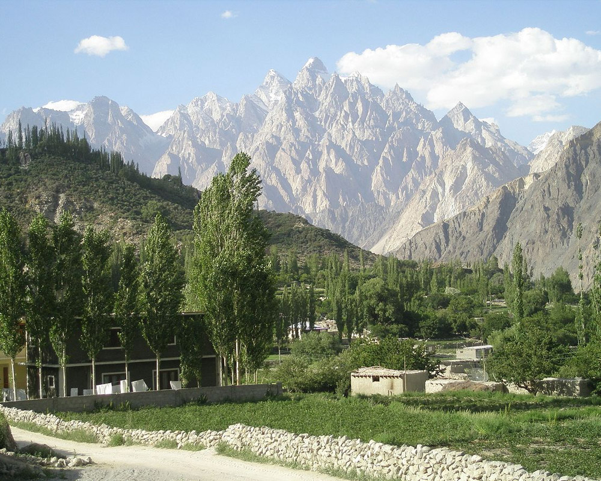

- Rakaposhi Peak
- Attabad Lake
- Passu Cones 
- Rush Lake
Beautiful tourist places of Hunza

First and foremost is the view of Rakaposhi.
The immense mountain of Rakaposhi is everywhere, no matter what
part of Hunza you are staying in.
Moreover, the mountain is a part of the Karakoram Mountain Range and is
7,788 meters high.
The colors and charm of the spring season are awe-inspiring, attracting many tourists annually.
Also, the length
of the lake is 13 miles, and the lake’s depth is almost 358 feet.
The lake also ranked among the top lakes in
Pakistan because of its tremendous beauty.
Between the Gojal valley of upper Hunza and the nine-colored valleys, Gulmit provides a significant tourist
spot
in Hunza.
Here you can find the enormous colors of nature.
The panoramic views of the whole valley, along with
the Passu Cones, are so captivating.Moreover, Gulmit
provides a complete package for its tourists in the shape of
high peaks, mountains, monuments, and a
pleasant climate.

Another amazing in the Nagar Valley of Hunza is Rush Lake.
Moreover, Nagar is one of the most attractive valleys.
Above all, mesmerizing colors of Nagar valley will
never be found; nothing is more beautiful than simplicity.
Rush Lake in Nagar valley is an alpine lake with almost a surface elevation of 4,694 meters.
The massive mountains
surround the lake, and it is considered to be the highest lake in Pakistan.